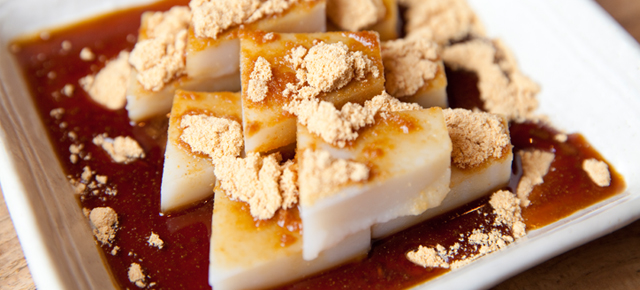

|  |
- Se estivermos na época do verão este delicioso doce é escolha certa. O Kuzumochi é uma variadade de mochi feito a partir de Kuzuko (pó de amido da raíz da planta kudzu e é tradicionalmente usado na culinária japonesa para engrossar molhos ou para vários tipos de sobremesa), açúcar e água. O toque final é dado pelo xarope e polvilhado de farinha de soja.
|